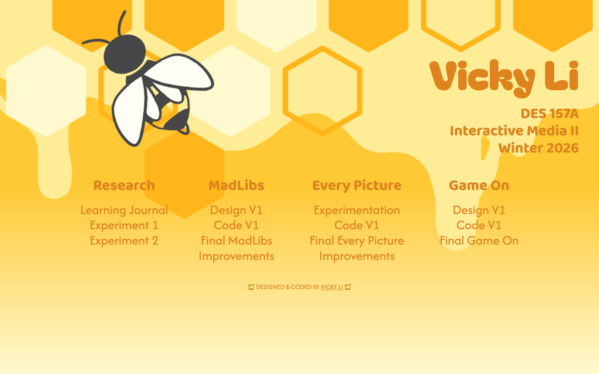
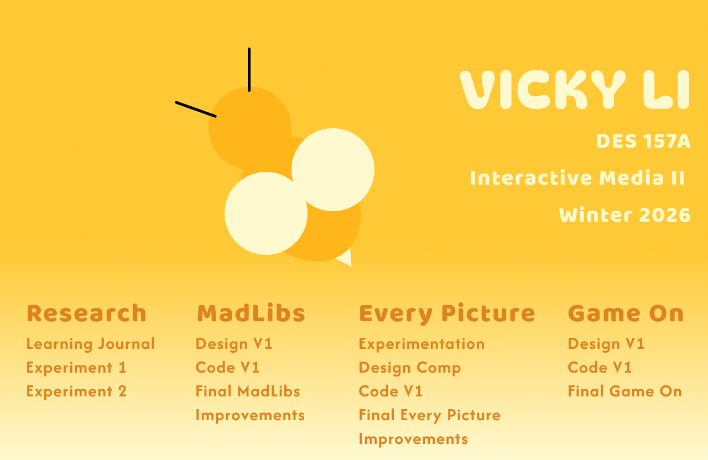
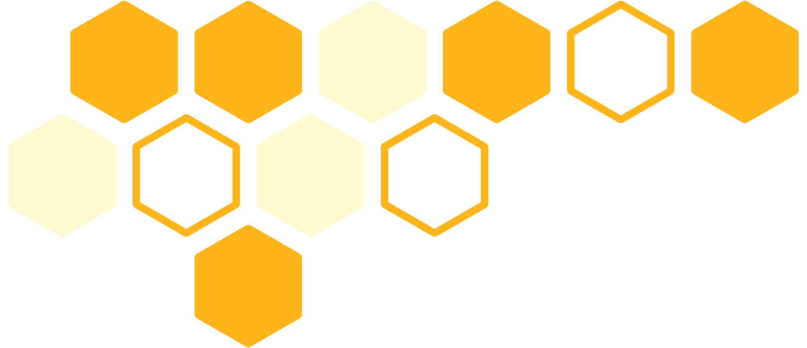
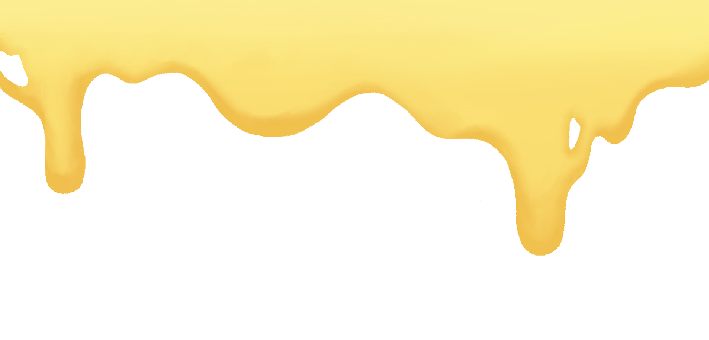
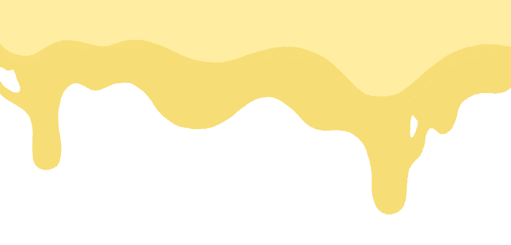
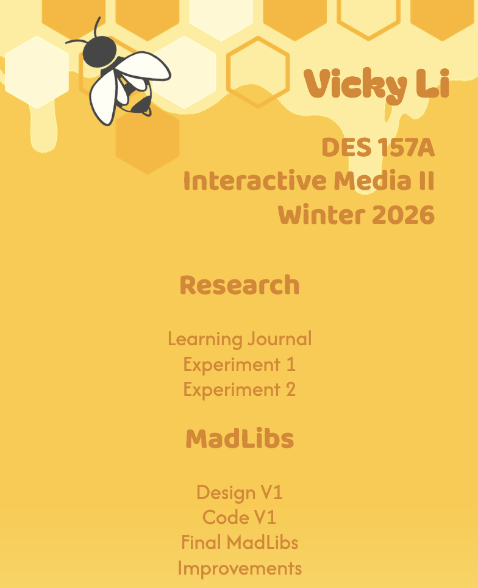
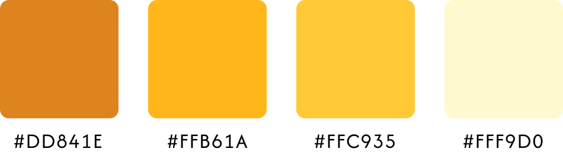

INTERACTIVE MEDIA II: PORTAL PAGE
This portal page initially started out as just a space to host my project for my DES 157A class. However, I had a lot of fun in the process of designing and coding this page and the webpage came out so well that it has become one of my best projects.
For access to the full website, please click here.

Early Concepts & Tests
This portal page initially started out quite simple. I only wanted to do a simple gold to pale yellow gradient with a bee at the top. It serve as a nice clean webpage to post my class projects on. However, as I was testing out colors and fonts, I started making a honeycomb frame just out of curiousity of how it would look and I ended up creating the perfect frame to put at the top of the page.


Since I had already created honeycombs for the portal page, I decided to push through with the bee theme and make a honeydrip animation in the background as well. I drew several iterations of different styles of dripping honey and tested them all out before deciding on a simpler style for the honeydrip art. The portal page already had a lot going on in the background, so a simple art style would add more to the design than a more complicated style. The animation itself took some time and a lot of tweaks to get right, but the end product moved exactly like the slow dripping of honey in the background.



Goals & Challenges
My main goal going into this project was to have each element enchance one another and make everything feel cohesive. Everything from the color choice to the typefaces were chosen with a honeybee theme in mind. I also wanted to use this opportunity to showcase a more sophisticated understanding of HTML and CSS, something I had only started learning three months ago when I was coding this.
The biggest challenge I had while making this portal page was definitely positioning each element in the page. While I had used CSS before, it definitely felt like I grew my skills during the process of coding this webpage. Because each element had its own z-index and and positioning order, I had to test my portal page over and over again to ensure it worked properly.
Another challenge I faced was coding the mobile layout. I wanted to make this page mobile-friendly as well, but all the design and art elements were created with desktop view in mind. So instead of just fixing the organization of the project menus, I ended up reconfiguring the positioning and layouts of the honeycomb frame and the honeydrip animation again. But in the end, I love how both the desktop and mobile view came out and felt that it really reflected my skills at the time.

Imagery & Themes
Aside from the heavy honeybee theme in the art and header, I also made very deliberate choices in my choice of typeface. I tested through an entire list of typefaces before choosing Bagel Fat One for my name because the circular rounded ends of the typography in this font made it look as though the letters were written with honey. The rest of the headings were also rounded sans-serif typefaces to keep up with the theme, and the actual menu options were a simpler font to ensure legibility and clarity. As for the color choices, after testing through many variations and shades of yellow and gold, I settled on these four to use through my portal page.

Final Notes
This is one of my favorite projects not only because of how well everything works together, but also because I had a lot of fun designing the layout and art for this portal page. I feel that while it did its job as a place to host my projects and showcase my coding skills, it also served as a reflection my personality and hobbies as a designer. In the end, I only had about a week to do the sketching, coding, and testing for this webpage but it came out so well I'm still proud of it even now.